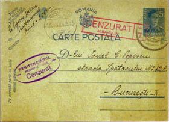

www.scherrer-rumaenien.de
Horst Scherrer, Deutschland "Die Lager- und
Unterdrückungssysteme in Rumänien von 1941 - 1944"
(Lagărele şi sistemele de oprimare în România între 1941 - 1944)


Carte poştală către familia din Bucureşti a deţinutului Bernard Nadler, din închsoarea specială din Caransebeş
Carte poştală a unui deţinut din închisoarea Văcăreşti către familia sa din Bucureşti


Carte poştală a unui deţinut medic (nr. 2564) din închisoarea din Aiud, adresată familiei sale din Bucureşti
Carte poştală a unei familii ucrainiene, probabil deportată în Transnistria, adresată fiului ei, prizonier de război în Stalag Nr. 319 din Cholm